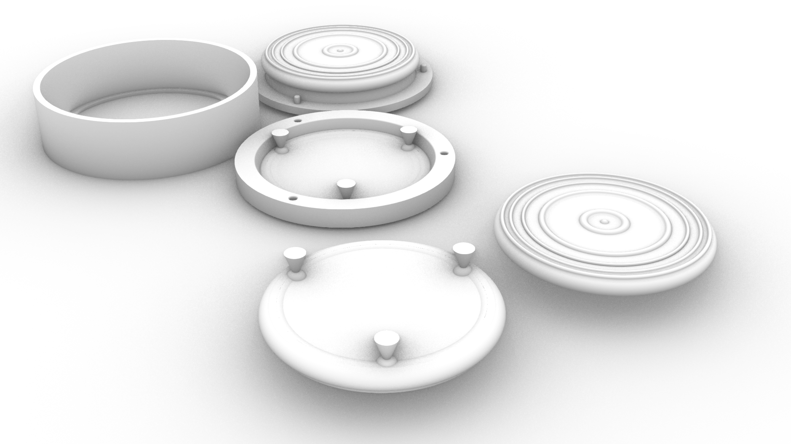

A6: Modelling and Casting!
Design and fabricate a 2-part (silicone) mold. You will need to use the mold to cast at least 4 identical parts (e.g. in plaster).
Design your master part in CAD first, then design your mold, then design a mold to cast your mold in. So meta!
You need to 3d print your molds-for-molds. Then you need to cast your molds! Then you need to cast your parts!
Design your master part in CAD first, then design your mold, then design a mold to cast your mold in. So meta!
You need to 3d print your molds-for-molds. Then you need to cast your molds! Then you need to cast your parts!
Coaster Documentation:
Modeling:

After last week I decided to model my own coasters as opposed to using the fish head design found on thingiverse. I designed the two parts of my mold to meet at the edge of a curve that formed a seam along the bottom of the shape. By flipping my final shape for the mold the highest points are the feet instead of the texture of the top, and that is where I attached the pouring spouts.
The concentric rings helps to stop movement of cups with a bottom lip, while flat bottom mugs can still fit comforably. The feet fit between rings for a better fit when stacking th coasters.
Source files:
Rhino file
3D printing:
I 3D printed 3 parts: one section for the top of the shape to be the bottom of the mold, the bottom of the shape that will be the top of the mold with the poring/air spouts, And finally the wall that allows the other two shapes to be slot in to make the silicone mold and to be used later when casting the plaster. Once 3D printed I removed the supports for the bottom panel and attempted to sand the print down slightly to remove some of the 3D printed texture.
Source files:
Top and bottom file
side panel file
silicone:
After my Oomoo 30 arrived pre cured, I used Oomoo 25. I created two differnt top of the mold pieces that made the bottom of the coasters due to the first one being too thin and falling into the cavity of the bottom mold piece when placed together. The second casting was better supported but I did need to cut into the mold to connect to the pouring tubes. The connectors did not come out as cleanly though in the second mold, being overall more stubby and hard to connect/align.
Plaster:


The mold was poured through three different spouts that linked into the legs of the coasters. The angle of the spouts caused the mold to break at this point if over poured. The plaster process proved difficult to gage the right consistancy and I was admitidly too impatient when mixing in more. This meant that my first attempt suddenly thickened too much to be poured, and the next attempt had an incomplete section due to the excess water rising to the top of the mold.
The subsequent 3 pieces were complete but did have some small air bubbles, causing imperfections.
In the future I would avoid doing such a flat mold and instead place it at more of an angle and a wall to also hold it from the top. The 3d printed wall for the silicone mold was reused for the renforcing wall for the silicone wall, but only covered the side and bottom sections. I would also like to try tapping it more once it's poured to release the bubbles.